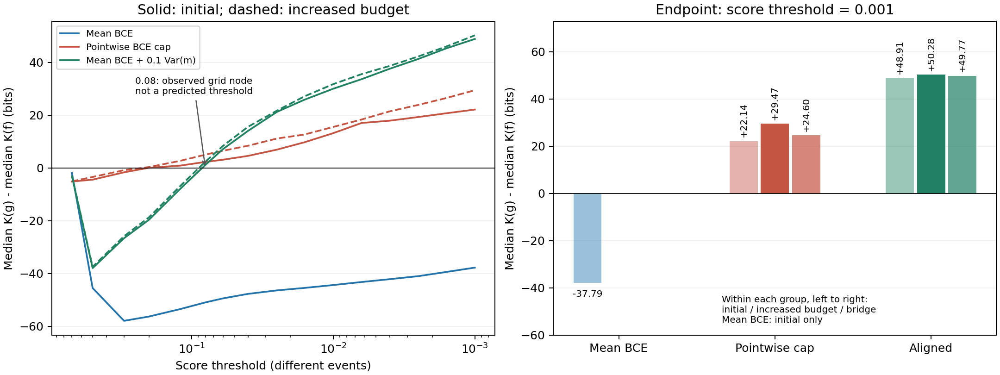
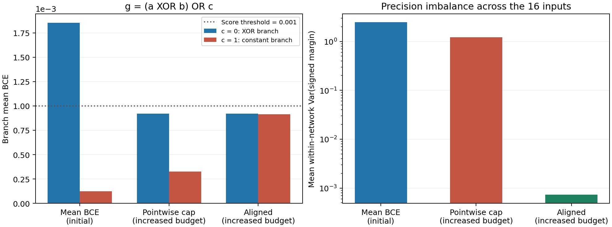

October 2026 update: The original report is retained; jump to the added experiments, checks, and limitations.
The core of public experiment E31 is not an isolated loss comparison, but an evidence chain on the same Power-architecture mod97 task: original grokking with amplitude-alignment regularization -> raw-MSE target-amplitude controls -> amplitude series and static checks on smaller networks. The question is how the loss selects a joint output distribution and changes rule recovery, rather than treating "lower training CE" as the only explanation.
Core experimental chain
- CE + amplitude-alignment regularization on the original Power mod97 task: the unregularized CE baseline still had not recovered the rule when training CE reached about
4e-11; both amplitude-alignment conditions achieved complete generalization in 3/3 runs, while retaining a post-fitting grokking delay. This is the most important original-Transformer result in this experiment; seePOWER_MOD97_ALIGNMENT_REPORT.md. - Two raw-MSE rounds on the same Power architecture: the 0/1 and 0/15 target amplitudes achieved complete recovery in 1/3 and 2/3 runs. This shows that diagnostic CE for fixed one-hot targets, the actual optimization objective, and whether grokking occurs must not be conflated; see
POWER_MOD97_MSE_ROUNDS_REPORT.md. - 4-bit copy, Rule30, and static amplitude checks: smaller networks separate target center, class spacing, amplitude alignment, and finite-sample effects; see the other reports in this directory.
Public report entry points
POWER_MOD97_ALIGNMENT_REPORT.md: the original Power Transformer CE/grokking and amplitude-alignment regularization experiment;POWER_MOD97_MSE_ROUNDS_REPORT.md: the raw-MSE 0/1 and 0/15 rounds on the Power architecture;COPY_4BIT_MSE_AMPLITUDE_SERIES.md: the 4-bit-copy MSE amplitude series and the origin of the amplitude-alignment regularizer;RULE30_MSE_PM01.md,RULE30_CENTERED_MSE_AMPLITUDES.md: Rule30 target-center and amplitude controls;MARGIN_ALIGNMENT_STATIC_VERIFICATION.md: an independent static-distribution check with a fixed training set.
Failed seeds, paused states, the single data split, and target-amplitude boundaries must be read together with the successful results. These experiments do not support the claim that one loss is universally better; they support the narrower conclusion that loss, amplitude, and alignment direction change the joint output distribution and thereby change rule-recovery accessibility and selection pressure.
Power Architecture mod97: Amplitude-Alignment Mechanism Control
Date: 2026-09-11.
Core Result
Both amplitude-variance regularization groups recovered the complete rule in 3/3 runs; the unregularized CE baseline still had 0/3 recoveries after 150,550 steps, with mean test accuracy 15.5333%. The regularized groups did not eliminate delayed generalization: the training set became nearly or completely correct early, while test accuracy rose only after a substantial delay.
This supports the following claim: under this Transformer, training set, and optimization configuration, amplitude alignment can substantially improve rule recovery within a finite budget without requiring the raw CE to reach the depth reached by the unregularized group. It does not measure a new static parameter volume or identify which specific geometric or optimization mechanism causes the improvement.
Configuration and Run Status
- Mod97 division over 9,312 inputs: 6,518 training and 2,794 test inputs, using one fixed split.
- The original Power two-layer, width-128, four-head Transformer was retained, with a 239-token vocabulary, ReLU, and bias-free projections; each model has 455,424 parameters.
- The data fraction was increased to 70%, so this is a mechanism experiment on the original architecture, not an exact reproduction of the 50% data headline plot.
- All three groups used the same numerically stable CE objective, Adam with learning rate 0.001 and betas=(0.9,0.98), no weight decay, and TF32 disabled.
- CE still included answer and EOS positions; the variance regularizer acted only on answer positions. Throughout this report, "training CE" means answer-only CE and does not include EOS.
- The regularizer was the variance of correct-direction logit gaps over all training samples and all incorrect tokens, with coefficients 0, 0.1, and 1; each group used seeds 0, 1, and 2.
- Each model was saved and stopped at the first recorded evaluation with 100% test-answer accuracy. Stability under continued training was not tested.
- The run records specify an RTX 4090 and PyTorch 2.8.0+cu128; the cumulative run time was 77.889 minutes. The job was manually paused at 150,550 steps, and the three baselines could still be resumed. This was not a completed one-million-step run.
Per-Seed Results
| Condition | seed | First full training accuracy | First test 99% | First test 100% | Last test accuracy | Last training answer CE |
|---|---|---|---|---|---|---|
| CE | 0 | 1,300 | not reached | not reached | 5.9055% | 4.4372e-11 |
| CE | 1 | 4,600 | not reached | not reached | 36.3636% | 3.9559e-11 |
| CE | 2 | 5,100 | not reached | not reached | 4.3307% | 3.5049e-11 |
| CE+0.1R | 0 | 1,100 | 77,500 | 140,000 | 100% | 7.6200e-5 |
| CE+0.1R | 1 | 1,100 | 43,000 | 51,000 | 100% | 8.4922e-5 |
| CE+0.1R | 2 | 1,100 | 34,500 | 46,000 | 100% | 9.9678e-5 |
| CE+R | 0 | 1,800 | 57,500 | 71,500 | 100% | 7.7885e-4 |
| CE+R | 1 | 2,200 | 35,500 | 46,000 | 100% | 3.4850e-3 |
| CE+R | 2 | 2,200 | 79,000 | 140,000 | 100% | 3.7625e-4 |
After first reaching full training accuracy, some models showed small regressions; not every subsequent evaluation was exactly 100%, although training accuracy remained high overall. The regularized test rise was not merely waiting for the final evaluation: reaching 50%, 90%, and 99% also occurred substantially after training-set fitting, giving a delayed-rise curve.
Some models also regressed after their first 99% crossing. The last upward crossings after which the observed trajectory did not fall below 99% were 96,500, 44,500, and 43,500 for CE+0.1R, and 62,500, 35,500, and 86,000 for CE+R. These describe only the observed interval and do not guarantee stability under continued training.

Main Mechanistic Information
- Lower raw CE alone did not guarantee rule recovery in this optimization process. The unregularized group reached about 4e-11 and remained far from complete generalization; the regularized groups recovered the rule at higher raw CE.
- The output distribution was changed. The within-group median standard deviation of logit gaps at the final recorded snapshot was 6.439 for CE, 0.02837 for CE+0.1R, and 0.03175 for CE+R. The baseline had larger mean gaps but much greater nonuniformity.
- The regularizer did not make this Transformer learn synchronously. All six regularized models showed a clear post-fitting wait and still passed the pre-specified delayed-generalization criterion.
- Training CE was not monotonically decreasing in the regularized groups. The curves fluctuated and training accuracy also dipped slightly; the deepest final CE crossing cannot be treated as the complete explanation for the generalization change.
- There is no reliable monotonic strength result. Coefficient 1 reached 100% earlier than 0.1 for seeds 0 and 1 but later for seed 2; with only three paired seeds, one should not claim that coefficient 1 is always better or 0.1 is always faster.
The unregularized baseline had not completed recovery, so its true grokking time and an exact speedup cannot be calculated. baseline_delay_not_yet_confirmed means that the baseline had not finally generalized in the observed interval, not that the regularization intervention had no effect.
Common CE Thresholds
Only recorded snapshots after full training-answer accuracy and the first passage through the specified answer-only raw-CE threshold were used:
| Threshold | Condition | Seeds covered | Mean test accuracy | Median actual CE |
|---|---|---|---|---|
| 1e-3 | CE | 3/3 | 9.1625% | 4.1787e-4 |
| 1e-3 | CE+R | 3/3 | 99.7972% | 9.3153e-4 |
| 1e-4 | CE | 3/3 | 13.4216% | 5.8361e-5 |
| 1e-4 | CE+0.1R | 3/3 | 98.1150% | 8.5070e-5 |
These are common thresholds, not exact matched-loss conditioning; the actual CE values differ. At the earlier, higher threshold, the regularizer was not always superior; for example, CE+0.1R had only 12.9444% at the 1e-3 threshold. After successful stopping, no deeper CE trajectory was generated, so missing levels were not filled in as 100%.
Independent Checks and Boundaries
- The returned-source hash and metadata matched; the AST matched the local version.
- The data order, modular-division semantics, and train/test split were independently reconstructed; data hashes matched.
- For 2,261 complete mapping records, answer accuracy, EOS accuracy, full-row accuracy, function hashes, and CSV entries all matched.
- CE and regularizer statistics were independently recomputed with NumPy reductions for 15 raw output snapshots; the maximum absolute error was 8.88e-16.
- All inputs were reevaluated locally on an RTX 3080 with PyTorch 2.11.0+cu130. The maximum raw-output difference was 8.06e-5, but no answer or EOS class changed; all six successful endpoints still implemented the complete rule.
- The production seed-initialization hash was not reproduced bit-for-bit locally. Production used torch2.8 and the local check used torch2.11; the cause was not investigated further, so this check is not claimed to pass. Pairing is supported by reused initial states, production hash assertions, and independent step-0 full-prediction checks. The forward check of saved weights does not depend on reinitialization.
- The final weights of the three baselines were not in the download package; only their first full-training-accuracy weights were saved. Their final classes can therefore be independently checked from complete predictions, but their final CE could not be recomputed from final weights. Resume checkpoints remain on the AutoDL instance.
- No additional training, static sampling, or hyperparameter search was performed in this round.
Files
- [Original result package]
- [Offline analysis script]
- [Summary and checks]
- [Per-seed results]
- [Weight verification]
- [Common CE thresholds]
MSE Amplitude Series for 4-bit Copy and the BCE Amplitude-Alignment Regularizer
Part of: E31 loss, target amplitude, and grokking. This page fills in the 2026-09-10 4-bit copy series, which is the birthplace of the amplitude-alignment regularizer and the evidence for the direction "MSE is not uniformly inferior to BCE."
Question
With 4→16→1 tanh fixed (97 parameters), 0/1 inputs, Gaussian initialization, and full fitting guaranteed: how does replacing the loss from BCE with raw MSE at different target amplitudes, or adding an amplitude-alignment regularizer on top of BCE, change the full recovery rate of the copy rule?
Results
Small target-amplitude series (12 training samples, 512 independent initializations per group)
| Target | Full copy recovery | Unseen accuracy |
|---|---|---|
| BCE / MSE ±1 | 512/512 | 100% |
| MSE ±0.1 | 446/512 (87.11%) | 96.00% |
| MSE ±0.01 | 67/512 (13.09%) | 58.79% |
| MSE ±0.001 | 30/512 (5.86%) | 49.32% |
All groups fully fit the training set. Full fitting ≠ generalization: with the ±0.001 target, all 12 training points are fitted, while the mean accuracy on the 4 unseen points is 49.32%, close to random guessing.
n=8 control: 0/1 MSE overtakes BCE
| Target | Full copy recovery |
|---|---|
| BCE | 374/512 (73.05%) |
| 0/1 MSE | 507/512 (99.02%) |
| ±0.5 MSE | 505/512 |
| ±0.3 MSE | 480/512 |
133 seeds succeeded only with MSE, with none in the reverse direction. The failure of small-amplitude MSE must not be generalized into "MSE is inferior to BCE"; whether it works depends on the target center, spacing, and task saturation, not on the loss name.
BCE + amplitude-alignment regularizer (birthplace)
BCE + λ×(variance of per-sample signed logits), λ∈{0.01, 0.1, 1}: all three levels recovered 512/512 (baseline BCE only 374/512). The weak-regularizer group's raw BCE median is almost identical to the baseline (7.73e-6 vs 7.55e-6), ruling out the explanation "the loss simply went lower." This regularizer was subsequently transferred to Rule30 and mod97 (see the other E31 report pages).
Verdict
- The choice of loss direction (target position, shape, alignment) is a control axis independent of "loss depth"; small-amplitude targets can destroy rule recovery from finite samples;
- "Only BCE can grok" does not hold: 0/1 MSE overtakes BCE in this group;
- Amplitude alignment (per-sample outputs kept as close as possible) can substantially strengthen the selection pressure favoring rule recovery — the birthplace of the amplitude-alignment regularizer.
Boundaries
- A single small
4→16→1 tanhnetwork, the single copy rule, 0/1 encoding, 512 seeds; the center / spacing / task saturation of the amplitude effect are not separated; - The results must not be extrapolated to "MSE is generally superior/inferior to BCE" or "the alignment regularizer is generally effective";
- Together with Rule30 (the direction favoring BCE) and mod97 (the direction where alignment works) in E31, these form the full picture, and only one side of it should not be cited.
Files
experiment_4bit_copy_small_target_local.py: small target-amplitude five-level series;experiment_4bit_copy_zero_one_mse_local.py: n=8 0/1 MSE vs BCE control;experiment_4bit_copy_centered_mse_local.py: centered-amplitude (±0.5/±0.3) control;experiment_4bit_copy_mse_intermediate_local.py: intermediate-amplitude additional level;experiment_4bit_copy_bce_alignment_local.py: BCE + amplitude-alignment regularizer;- Result materials:
research/notes/20260910_4bit_copy_*.md(five corresponding notes).
Power Architecture mod97: Two Rounds of Raw MSE at 0/1 and 0/15
Part of: E31 loss, target amplitude, and grokking. This page fills in the two rounds of raw MSE on the original Power Transformer; CE is used only as a diagnostic and does not participate in gradients.
Question and Configuration
Original Power two-layer, width-128, 4-head Transformer (455,424 parameters), mod97 division, 70% data (6,518 train / 2,794 test), no weight decay, Adam(lr=0.001, betas=(0.9,0.98)). The training target is raw one-hot MSE at the answer and EOS positions; the answer is averaged per sample, over the two RHS positions and all 239 classes, without amplifying labels or adjusting class weights. 3 paired seeds per condition (same data split, same initialization and batch order), stopping at the first 100% test answer.
Results
| Condition | Full rule recovery | Notes |
|---|---|---|
| raw MSE 0/1 | 1/3 | seed 2 reached full marks at 140,000 steps; seed 0 peaked at 99.36% without full marks; seed 1 degraded late (training MSE stuck at 1.85e-5, with the bottleneck in the hidden representation rather than the output layer) |
| raw MSE 0/15 (wrong class 0, correct class 15) | 2/3 | succeeded at 14,500 and 70,500 steps (median 42,500); a uniform 100,000-step comparison gives 2/3 vs 0/3 for 0/1 |
Reference calibration point: the "diagnostic CE" of a perfect one-hot solution is 4.4836 — i.e., for fixed one-hot targets, cross-entropy does not approach 0. This directly refutes "grokking must drive raw CE extremely low," and is consistent with the phenomenon in E31 where the CE + amplitude-alignment regularizer group recovered already at CE≈1e-4–1e-3.
Mechanism and Boundaries (must be kept together with the results)
- Both rounds are in
pausedstate (manually paused, not run to the end of the budget), with mechanism statusmse_recovery_or_delay_not_yet_confirmed; stopping at first full marks does not guarantee stability under continued training; - 3 seeds, single data split; stopping looks at the semantic answer and does not use EOS as an easy sample to inflate accuracy;
- Failed seeds were not attributed (the user decided not to investigate), so "the median step count of only the successful seeds" cannot represent the whole condition;
- CE is diagnostic only and does not participate in gradients; the 0/15 group's actual training does not divide by the amplitude squared, and relative MSE is used only for cross-amplitude comparison;
- This must not be used to claim "raw MSE can grok in general" or "0/15 is generally better than 0/1"; read this page together with
POWER_MOD97_ALIGNMENT_REPORT.md(CE + amplitude-alignment regularizer 3/3) and the CE baseline (0/3, training CE already down to ~4e-11 yet still not recovered).
Files
experiment_power_mod97_raw_mse01.py,experiment_power_mod97_raw_mse15.py: frozen experiment scripts;analyze_power_mod97_raw_mse01.py,analyze_power_mod97_raw_mse15.py: analysis scripts;- Result packages:
E:/Downloads/results_power_mod97_raw_mse01_n70_package.zip,results_power_mod97_raw_mse15_n70_package.zip; - Analysis packages:
tmp/power_mod97_mse01_analysis_20260911/,tmp/power_mod97_mse15_analysis_20260911/(analysis.json, per-seed tables, weight verification).
Independent Static Verification of Amplitude Alignment
Date: 2026-09-14. Status: one independent SMC verification round of the amplitude constraint completed; no SGD training, cross-training-set cost model, or deep-tail extrapolation was run.
Scope correction: the subsequent task clarification was to use newly surveyed mathematical foundations to make reliable quantitative predictions from the existing framework. This round was instead an independent static check of amplitude regularization. The results are retained, but do not count as completion of that original request; the mathematical transfer and old-data backtest are documented separately in the correction record.
Conclusion First
For this fixed training set, network, and Gaussian parameter measure, the amplitude-variance constraint produced an additional static selection effect beyond mean BCE. After matching the BCE distribution, the stronger lambda=0.1 condition increased the mass of the complete parity2 rule from 86.65% to 88.82%, while lowering the mean reference K and narrowing the K distribution. The target-share gain for the weaker lambda=0.01 condition could not be distinguished clearly from this round's Monte Carlo variation.
This does not directly prove the original grokking or SGD sampling dynamics, and it does not show that every amplitude regularizer strengthens simplicity bias. It answers a narrower question: near the same mean loss, can making the correct-direction margins more similar further change the static function distribution and favor rules with lower reference cost in this experiment? The result supports yes.
1. What Was Measured
- Network:
4→16→1 tanh, with 97 independent standard-Gaussian neural coordinates; hidden weights and biases divided by 2, readout weights and bias divided by 4. The parameterization was unchanged from the earlier experiment. - Inputs: all 16 four-bit 0/1 inputs. Training inputs were fixed at 0, 3, 4, 7, 8, 11, 12, and 15; the other eight points were observation points only.
- Labels:
parity2, namely0x0FF0.parity4(0x6996) also agrees with these eight training labels, but the analysis did not retain only these two functions; all complete mappings were included. - Regularized quantity: the variance of the correct-direction margin
m_i=(2y_i-1)z_i. This is not a constraint that makes raw logits for opposite labels equal, and it is not an unsigned-amplitude statistic. - Sampling event:
J_lambda = mean_BCE_D + lambda * Var_D(m_i) <= 0.3, with lambda equal to 0, 0.01, and 0.1. - Each condition used eight independent Gaussian-start replicas with 4,096 SMC particles per replica, followed by 96 fixed-step pCN updates at the endpoint.
Meaning of fixed K: the complete-rule cost table from the earlier full-16-point BCE<=0.01 curve was reused as an independent reference label for each hard function. It is not the parameter-volume cost under the current eight-sample constraint, an exact per-weight Kolmogorov complexity, or a newly estimated contraction slope.
Meaning of agreement: two complete mappings were independently drawn from the conditional function distribution, their pointwise agreement was computed on the fixed eight unseen inputs, and then averaged. This is not target accuracy and not the probability that two complete mappings are identical everywhere.
2. Frozen Forecast, Then Independent Sampling
Before the new scientific sampling, the conditional-filtering forecasts, snapshot hashes, and protocol from four earlier SMC replicas were frozen at 2026-09-14 07:08:21. The new SMC run loaded no old weights and used no function-ID-guided proposal.
| Condition | Old forecast parity2 share | New independent SMC share | New mean fixed K | New unseen agreement | Extra volume cost: new / old forecast |
|---|---|---|---|---|---|
| No regularizer | 85.0830% | 85.8521% | 559.862 | 95.3201% | 0 / 0 bit |
| lambda=0.01 | 85.8128% | 86.4014% | 558.896 | 95.3927% | 0.296 / 0.427 bit |
| lambda=0.1 | 88.2866% | 88.8031% | 555.059 | 95.9902% | 2.841 / 2.912 bit |
The extra volume cost is the negative-log2 mass ratio of the new event relative to the unregularized event; it must not be confused with the mean fixed K in the table.
The old forecast and new measurement had the same direction and were numerically close, but are not called exact agreement: the target-share difference was about 0.52 to 0.77 percentage points, and the total-variation distance between complete-function distributions was about 1.1% to 2.0%. The old forecast was also a finite, correlated SMC estimate; the error bars for the new replicas do not include old-estimate error or possible shared mixing bias.
3. Excluding the Explanation "BCE Was Simply Lower"
Because J_lambda<=0.3 leaves budget for the regularizer, the treatment group could naturally favor lower BCE. Comparing only the previous table is therefore insufficient.
The preregistered comparison used BCE sub-bins of width 0.0005, compared function distributions within the same bins, and reweighted the unregularized control to the treatment group's BCE-bin distribution. Common support was determined by total counts per bin and independent-replica coverage, without looking at target share or K benefit.
The main lambda=0.1 sample had 85.19% support coverage and triggered the one prespecified supplemental draw: eight additional independent unregularized replicas sampled the 0.27<=BCE<=0.29 band. They only filled control sub-bins fully inside that band and were not mixed into the overall unregularized distribution. Main matched support after supplementation was 98.62%.
Main Result: lambda=0.1
| Metric | BCE-matched unregularized control | Amplitude-variance regularizer | Difference |
|---|---|---|---|
| Mean training BCE | 0.29246885 | 0.29246186 | -0.00000698 |
| Complete parity2 share | 86.6538% | 88.8201% | +2.1663 percentage points |
| Mean fixed K | 558.8386 | 555.0164 | -3.8223 |
| Fixed-K standard deviation | 43.8556 | 37.6824 | -6.1732 |
| Unseen-point paired agreement | 95.5737% | 95.9867% | +0.4130 percentage points |
| Mean margin variance | 0.102079 | 0.044891 | -0.057188 |
Stratified resampling of independent SMC replicas 1,000 times gave the following 95% intervals:
- Target-share difference: [+1.6493, +2.7182] percentage points.
- Mean fixed-K difference: [-4.5129, -3.1665].
- Fixed-K standard-deviation difference: [-6.9816, -5.3368].
- Unseen-agreement difference: [+0.2409, +0.5998] percentage points.
These intervals describe replica-level Monte Carlo variation only; they do not include fixed-K label error or unknown shared mixing bias.
Prespecified Half-Width Sensitivity Analysis
Halving the BCE-bin width to 0.00025 gave 95.82% common-support coverage, with the same direction:
- Target-share difference +2.0991 percentage points, 95% interval [+1.6035, +2.5982].
- Mean fixed-K difference -3.7304.
- Unseen-agreement difference +0.3964 percentage points.
- The matched mean BCE values differed by only about 0.00000109.
The main effect therefore did not disappear under finer BCE matching. Finite bins are still not exact continuous equal-loss conditioning, but the residual BCE difference here was very small.
Weak Dose: lambda=0.01
The main-bin target-share difference was +0.3662 percentage points, with a 95% interval of [-0.2194, +1.0534]; the unseen-agreement difference also included zero. The mean fixed-K reduction was a weak signal, and its half-width interval also included zero. This round does not treat this dose as a reliable target-share or agreement improvement.
4. Theoretical Correspondence and What Was Not Proven
If E0 denotes BCE<=0.3 and E_lambda denotes the event with the added variance term, then E_lambda is a subset of E0. For a complete function f,
q_lambda(f) = q_0(f) * P(E_lambda | E0, f) / P(E_lambda | E0).
This conditional-probability relation is true by definition and is not a new discovery. The experimental question is how the margin distribution inside each complete mapping makes the extra constraint favor some mappings, and whether independent sampling reproduces that preference. The observed preference was higher parity2 mass and a lower, narrower reference-K distribution.
This is consistent with the correction that the joint output distribution is upstream and mean BCE is only one selection coordinate. It does not require the absolute mass of simple functions to increase; the total event mass for lambda=0.1 was actually smaller, while the target's relative share increased.
Four qualifications must remain attached:
- This measures one training set, one architecture, and one reference measure; it does not establish cross-task universality.
- This is a hard-threshold conditional distribution, not a soft
exp(-eta R)reweighting; it cannot directly validate a derivative value from a soft-response formula. - No SGD was run, and the result is not presented as a measurement of the static volume of original grokking.
- A narrower fixed-K distribution does not prove a unique microscopic complexity spectrum, nor that every hard-function cell narrows internally in the same way.
5. Computation, Checks, and Residual Risk
- Twenty-four formal main jobs and eight prespecified supplemental jobs were completed: 32 independent SMC jobs with 32 distinct seeds.
- There were 131,072 final weight vectors in total. All 16-point outputs were independently recomputed with NumPy float64; the maximum logit difference was within 8.02e-7, with no sign flips and no recomputed event-boundary violations.
- Sampling ran on a local RTX 3080 using CUDA device 1. Particles and forward passes used float32; log masses used float64; TF32 and AMP were disabled. The sampling jobs took about 618 seconds, or 10.3 minutes, excluding development, engineering checks, and post-processing.
- Seven sampler engineering checks and three bin-matching engineering tests passed. The 128-particle smoke data were kept separate from the scientific data and excluded from the formal statistics.
- An independent per-particle reweighting implementation checked the main bin-matrix analysis; the maximum statistic difference across four condition/bin-width combinations was below 2.9e-12.
- During the final 96 rounds, the mean target share changed by about 0.35 to 0.63 percentage points depending on condition. This short-range diagnostic cannot prove adequate mixing; multiple independent replicas also cannot rule out shared bias. The round was stopped without adding samples indefinitely in pursuit of precision that could not be guaranteed.
6. File Entry Points
- [Experiment protocol and run method]
- [Formal machine-readable results]
- Old forecast versus new measurement
- BCE-matched comparison
- [Independent matching audit]
- [Result package]


The original weights, logits, function IDs, layer diagnostics, and resume checkpoints remain in the local formal directory. The result package contains the final particles and analysis materials needed for analysis, but omits the larger .pt resume checkpoints.
2026-10-27 Supplement: Amplitude Alignment and Complexity Reordering for XOR / XOR-OR
This supplement organizes experiments completed on 2026-10-24 for publication on 2026-10-27. It extends E31's discussion of amplitude and precision without replacing earlier results. It is not a formal preregistration written retrospectively: the qualitative advance prediction, settings fixed before sampling, and checks added after observing the results are distinguished below. No new training or neural sampling was performed for this release.
The core conclusion is not only the success of amplitude alignment, but also a limitation of mean BCE as a complexity scale: raw-BCE volume is a valid measurement, yet in some cases it is not an adequate unified scale for independent logical complexity because it mixes in precision allocation across examples and branches. The measurement protocol therefore needs revision or supplementation within the existing joint-output framework; alignment is not a proven uniquely correct scale either.
1. Motivation and Advance Prediction
Defining greater complexity as faster contraction when loss decreases, and then using that definition to explain why complex rules contract faster, provides no test beyond the definition. Here an independent judgment about logical structure comes first, followed by a test of whether a specific output-precision intervention can change a counterintuitive neural-volume ordering.
The evidence chain is: independently judge g to be strictly more complex, identify the anomalous raw-K ordering, make an advance prediction that amplitude alignment may reverse it, and test that prediction through the measured reordering. The independent logical judgment is not inferred from K values or curve slopes; both the original logical expectation and the intervention prediction preceded this round of sampling.
The fixed rules are:
f(a,b,c,d) = a XOR b
g(a,b,c,d) = (a XOR b) OR c
The fourth bit d does not enter either rule. Relative to f, g has an additional control variable c that genuinely affects its output, rather than merely a longer expression that simplifies away. To state the independent logical judgment rigorously and checkably, this website supplement specifies the language before presenting the proof: the gate library is AND2, OR2, XOR2, NOT1, each gate has at most 2 inputs and costs 1, and wiring is free. A 0-gate program may output one original input or a constant. Cost is the minimum circuit gate count in this fixed library.
The function f has two essential variables, a and b, so a 0-gate program cannot implement it, whereas one XOR2 gate can; its minimum cost is therefore 1. The function g has three essential variables, a, b, and c: changing a with b=c=0 changes the output, changing b with a=c=0 changes the output, and changing c with a=b=0 changes the output. A single gate with at most 2 inputs cannot depend on three original variables, so g requires at least 2 gates. An XOR2 followed by an OR2 implements it with exactly 2 gates. Thus, in this explicitly specified language:
This proof is independent of neural sampling and Neural K and supplies a strict logical criterion for noncircular calibration. It formalizes the original logical expectation in the present website supplement; it does not claim that this gate library was formally preregistered at the time or that SAT minimality synthesis was performed for f/g. The separately obtained AND2 and AND2-OR certificates are not conflated with this proof. Strict gate-count ordering is not strict ordering in every universal description language, nor does it directly imply neural-K order preservation for arbitrary networks, measures, or continuous-output precision protocols.
Contrary to that logical criterion, existing low-loss measurements under ordinary mean BCE gave K_g<K_f. Here the anomaly means disagreement with an independent logical ordering, not defining complexity through neural volume and then treating another neural ordering as a logical proof.
Before this round of sampling, the user proposed that when c=1, g is constantly 1: the easy constant branch might achieve very low BCE, allowing the c=0 branch, which still distinguishes XOR, to retain higher loss. Restricting output-amplitude differences across examples might reduce the reversed ordering or even make g more costly than f. Reducing the gap and reversing the ordering are distinct outcomes. This was a qualitative prospective intervention prediction; neither numerical K differences nor a crossing threshold were predicted in advance.
2. Protocol and Measurement Objects
2.1 Fixed Network, Reference Measure, and Events
The experiment uses all 16 0/1 inputs of the complete 4-bit world, enumerating a,b,c,d from the most to the least significant bit. The truth-table IDs are f=0x0FF0 and g=0xCFFC. The network is fixed at 4→16→1 tanh with 97 independent standard Gaussian neural coordinates; hidden-layer weights and biases are divided by 2, and output-layer weights and bias by 4. All pools are initialized from the prior, without trained weights.
For target h, let z_i denote the logit. The signed margin, pointwise BCE, and population margin variance are:
The three scores define three different selection events. The coefficient lambda=0.1 follows the historical amplitude-alignment protocol and was fixed before this round of sampling, not tuned according to whether a reversal occurred.
| Name | Score s_h | Meaning of the constraint |
|---|---|---|
| mean_bce | $\frac1{16}\sum_i\ell_i$ | Allows the mean-loss budget to be redistributed across examples |
| max_bce | $\max_i\ell_i$ | Applies the same BCE cap to every example |
| aligned | $\frac1{16}\sum_i\ell_i+0.1\operatorname{Var}(m)$ | Penalizes both mean BCE and unequal signed amplitudes |
A positive Delta K means that g has less mass and higher Neural K. The groups use the same numerical thresholds but not the same event; an aligned threshold is not raw BCE. The objects are the separate full-target masses of the two targets, not candidate-function competition within one fixed training set. No additional hard-function cell is intersected with the event. A mean_bce or aligned threshold below ln(2)/16 already implies complete hard correctness; the corresponding bound for max_bce is ln(2).
2.2 Original Sampling and Follow-Up Checks
| Stage | Jobs | Independent pools per job | Particles per pool | Adaptation / fixed updates per level | Fixed updates at reporting nodes | Seed |
|---|---|---|---|---|---|---|
| Initial: two rules, three events | 6 | 4 | 2048 | 4 / 16 | 96 | 202610241701 |
| Increased budget: two rules, two intervention events | 4 | 4 | 4096 | 4 / 32 | 96 | 202610241702 |
| Parent-event bridge: two rules, two interventions, two nodes | 8 | Reuses 4 parent pools | 2048 | 4 / 64 | 128 | 202610241905 |
The initial and increased-budget runs contain 40 pools initialized from the prior. Particles are not exchanged across pools; each pool has independent prior, resampling, and mutation random streams. pCN updates three blocks in sequence: hidden layer, output layer, and all parameters, accepting proposals within the current event. Parameters and forward passes use float32, log mass is accumulated in float64, and AMP/TF32 are disabled. The original environment was Python 3.13.5, NumPy 2.4.1, PyTorch 2.11.0+cu130, and an NVIDIA GeForce RTX 3080 on cuda:1.
The fixed reporting nodes are 0.7, 0.5, 0.3, 0.2, 0.12, 0.08, 0.06, 0.04, 0.025, 0.016, 0.01, 0.0063, 0.004, 0.0025, 0.0016, and 0.001. The primary statistic is the median of pool K values, not the negative logarithm of mean pool mass. The released tables retain both statistics and pool ranges; particles must not be treated as independent replicates.
The increased-budget and bridge runs were precision checks added after the initial reversal and variation in absolute K under strong constraints were observed, not new formal preregistrations. The increased-budget stage retained both intervention conditions for f/g but did not rerun ordinary BCE. The bridge starts from the original mean_bce≤epsilon parent pools at epsilon=0.01 and 0.001, retains the parent constraint, and tightens max_bce or aligned. Accounting is performed separately for each pool:
The bridge uses new subsequent random streams but inherits parent-pool error. Its 32 endpoint pool records are not 32 independent prior replicates or a third independent estimator. Additivity within each pool does not imply exact term-by-term additivity of medians of different quantities.
3. Results: A K-Ordering Reversal, Not Merely a Slope Change
The table reports the median pool K for g minus the median pool K for f at a score cap of 0.001, in bits. Differences are calculated from unrounded estimates; subtracting separately rounded K values can differ by 0.01.
| Selection event | Initial Delta K | Increased-budget Delta K | Parent-event bridge Delta K |
|---|---|---|---|
| mean_bce | -37.79 | Not separately scheduled | Used as the parent event |
| max_bce | +22.14 | +29.47 | +24.60 |
| aligned | +48.91 | +50.28 | +49.77 |
The new ordinary-BCE estimates are K_f=823.33 and K_g=785.55; the historical scan gave 823.54 and 786.93, and the historical increased-budget estimate for f was 821.91. The new increased-budget aligned estimates are K_f=869.31 and K_g=919.60, with nonoverlapping four-pool ranges of 868.41–869.96 and 912.23–927.45. These ranges describe observed between-pool variation, not formal confidence intervals or global-mixing certification.
Aligned also reverses the ordering at 0.01: +30.04 bits initially, +31.78 with the increased budget, and +32.45 with the bridge. In the initial run the difference is -7.86 at 0.12 and +1.14 at 0.08; the increased-budget run is likewise negative at 0.12 and positive at 0.08. Thus 0.08 is the first sampled grid node with an observed positive difference, not a predicted threshold or a precisely located continuous crossing point. The direction does not rely on selecting only the deepest node.

At 0.001, the median conditional cost of adding aligned through the bridge is approximately 42.79 bits for f and 130.97 bits for g. The median total K values are 866.15 and 915.92, a difference of +49.77 bits. The added constraint retains a smaller fraction for g, agreeing in direction with direct estimation from the prior.
4. Branch Loss and Precision-Budget Allocation
The table retains actual BCE for both branches of g. The max_bce and aligned rows use increased-budget results; mean_bce uses the initial results.
| Selection condition for g | Mean BCE in the c=0 branch | Mean BCE in the c=1 branch |
|---|---|---|
| mean_bce≤0.001 | 0.0018534 | 0.0001242 |
| max_bce≤0.001 | 0.0009211 | 0.0003277 |
| aligned≤0.001 | 0.0009212 | 0.0009130 |
The ordinary event permits the harder branch's mean loss to approach twice the overall cap because each branch contains 8 inputs and the easier branch contributes very small nonnegative loss. Easy examples do not contribute negative loss. For f, the corresponding ordinary-event branch values are approximately 0.001013 and 0.000965, without comparable imbalance.
The pointwise cap prevents the harder branch from exceeding the shared cap while still allowing extra confidence on the easier branch, and the ordering already reverses. Aligned further brings the branch BCE values together and reduces g's mean margin variance from approximately 2.461 to 0.000730. The actual mean BCE under increased-budget aligned is 0.0009199 for f and 0.0009171 for g. These are close to each other but were not strictly continuously matched to the ordinary group.

These observations support the predicted intervention direction and the mean-loss budget-allocation explanation. They do not establish that the network internally executes a program that first tests c and then decides whether to compute XOR. The three selection events jointly change precision and amplitude allocation; all causal contributions have not been separated.
5. Conclusions and Boundaries
This experiment provides both a prediction test and a warning about the measurement definition. A qualitative advance judgment supported by independent logical structure and output-precision allocation successfully predicted a K-ordering reversal for this function pair after amplitude intervention, but this also shows that calibrating complexity solely through mean BCE loss is inadequate in some cases. The lower cost of g under the original mean-BCE event is not an invalid measurement; it may reflect cheaper continuous implementations and redistributable precision budgets. Using this valid volume directly as a unified scale for independent logical complexity requires revising or supplementing the protocol. Agreement with logical ordering after changing the event does not establish a uniquely correct, loss-independent complexity measure.
The joint output distribution is already a foundational object in the framework. What remains to be improved is the choice of comparable sections and the complexity definition on that distribution. Equal amplitude is only one particular choice. Different target amplitudes at different inputs or output positions may also be specified in advance, but regions, tolerances, and precision coordinates must be explicit, without selecting favorable sections after seeing results. Taking ordinary BCE toward zero does not automatically impose amplitude alignment, and this experiment does not imply that unregularized curves must eventually cross in an arbitrarily deep tail.
The historical independent float64 recomputation covered 672 snapshots and 1,900,544 parameter vectors. The maximum float32/float64 score discrepancy for direct estimation was approximately 1.80e-7; per-level survivor counts and K accumulation were checked separately. Bridge verification checked parent-snapshot identity, endpoint constraints, and additive accounting, but did not independently reconstruct bridge survivor counts at every level. The four historical engineering tests included an analytic Gaussian half-space, random-stream replay, and pool isolation. These are historical verification records; their sampling tests were not rerun for this release.
Absolute K remains sensitive to budget and path: median max_bce K for f is 883.91 initially, 860.10 with increased budget, and 851.47 through the bridge. Decimal places therefore do not indicate convergence precision, and shared finite-MCMC bias remains possible. The original increased-budget g-aligned run encountered one temporary access denial while saving progress JSON. It resumed from saved weights and RNG checkpoints with the original source and configuration, without changing sampling parameters or excluding replicas. No new SGD control was run for this function pair, and this supplement contains no SGD hitting-time material.
6. Public Reproduction Entry Points and Release Checks
Reproduction files are in xor_or_alignment_20261027/. run_experiment.py, bridge_diagnostic.py, and verify_bridge.py are byte-identical to their historical sources. The sampler SHA256 is 7960cbdeac3554850eefeb9f596637ed77ba615eaf56e68c4fd4268ece1b0aeb. analyze.py only adapts release paths and figure labels, removing the private drive-path entry point. Source and required-data hashes are retained in data/provenance.json; this does not imply that the historical experiments were rerun.
From this experiment directory, after installing the dependencies in requirements.txt, the following commands perform only lightweight checks and redraw the website figures, without training or sampling:
cd xor_or_alignment_20261027
python -E -s test_offline.py
python -E -s build_figures.py
python -E -s check_release.py
Run the following commands only after explicitly deciding to repeat the original SMC; they were not executed for this release. The sampler retains the original cuda:1 selection and requires the corresponding visible CUDA device, with no automatic CPU fallback. A changed device or numerical configuration should have a new run identity and must not be represented as a bitwise continuation of the original checkpoint.
$env:XOR_ALIGNMENT_TIER = 'primary'
Remove-Item Env:XOR_ALIGNMENT_JOBS -ErrorAction SilentlyContinue
python -E -s run_experiment.py
$env:XOR_ALIGNMENT_TIER = 'confirm'
$env:XOR_ALIGNMENT_JOBS = 'f__max_bce,g__max_bce,f__aligned,g__aligned'
python -E -s run_experiment.py
python -E -s analyze.py
$env:XOR_ALIGNMENT_TIER = 'primary'
Remove-Item Env:XOR_ALIGNMENT_JOBS -ErrorAction SilentlyContinue
python -E -s bridge_diagnostic.py
python -E -s verify_bridge.py
Initial output goes to results_primary/, increased-budget output to results_confirm/, and bridge output to bridge_results/. Bridging requires the mean_bce node snapshots saved by the initial run, and full per-parameter verification likewise requires snapshots generated by rerunning. The release contains only small aggregate CSV files and a bridge summary, not weights, checkpoints, or large raw results, so it cannot directly reverify the original 672 snapshots. The historical scan archive is also not bundled. The optional environment variable XOR_ALIGNMENT_HISTORICAL_PACKAGE is its explicit data entry point; without it, analysis reports that the archive is unavailable, without affecting recomputation of this round's direct results.
This release completed py_compile and import checks for all added Python files, 4 nonsampling offline tests, and two English-labeled figures generated from existing aggregate data. test_experiment.py retains the historical GPU/SMC engineering tests; it is not the offline test entry point and was not run. The public code does not depend on research sources outside the framework. Resampling, original-snapshot verification, and global-mixing validation remain distinct levels of work.